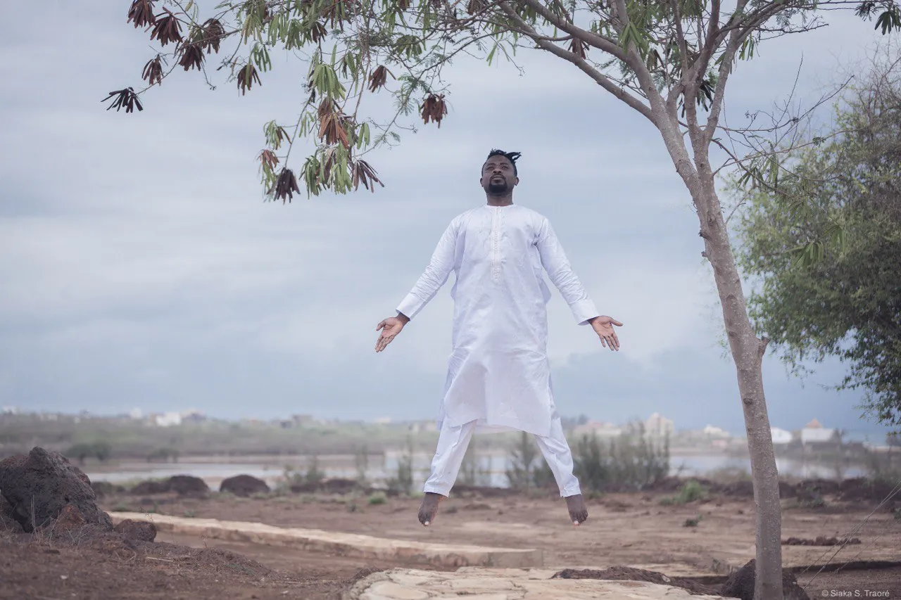
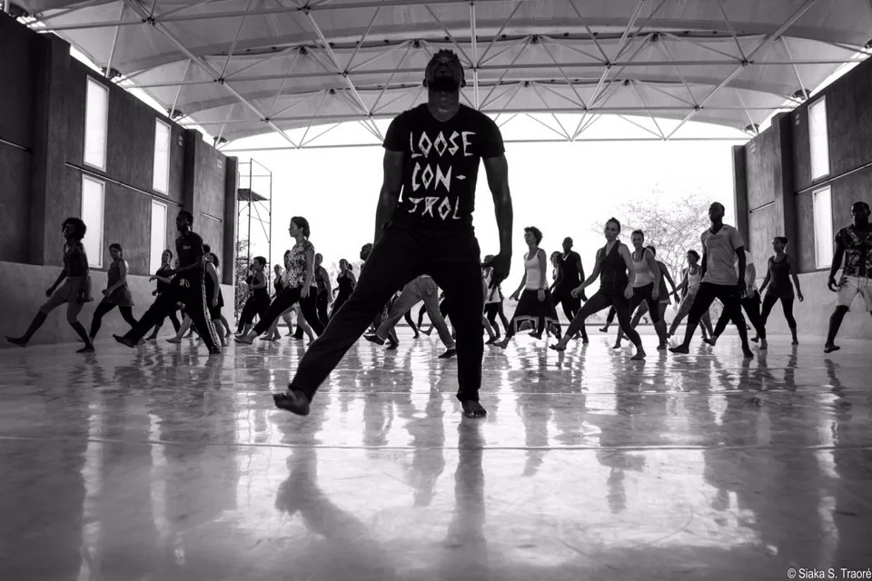
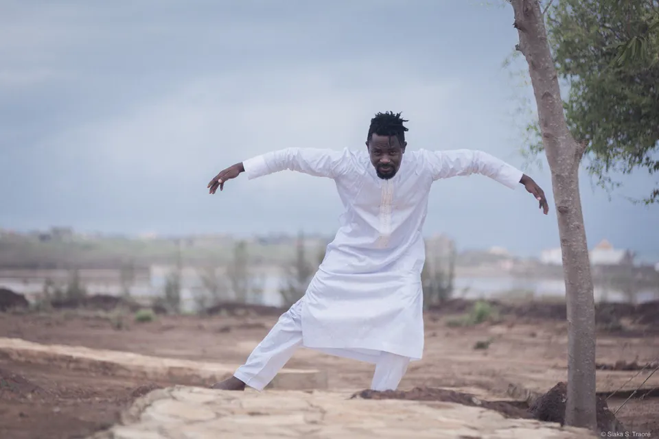
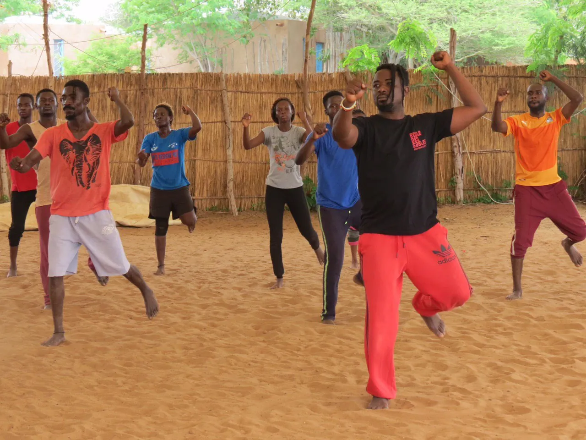
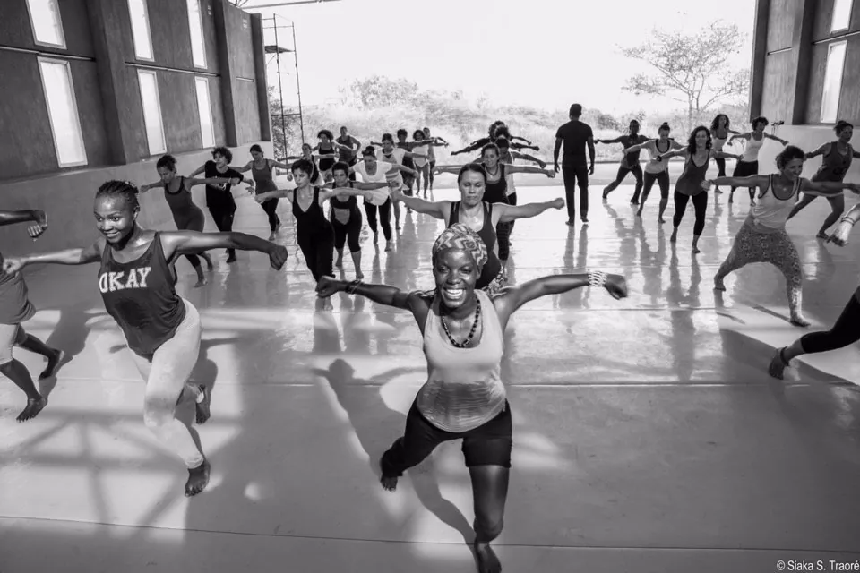
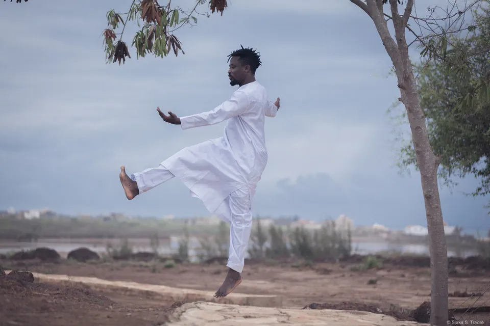
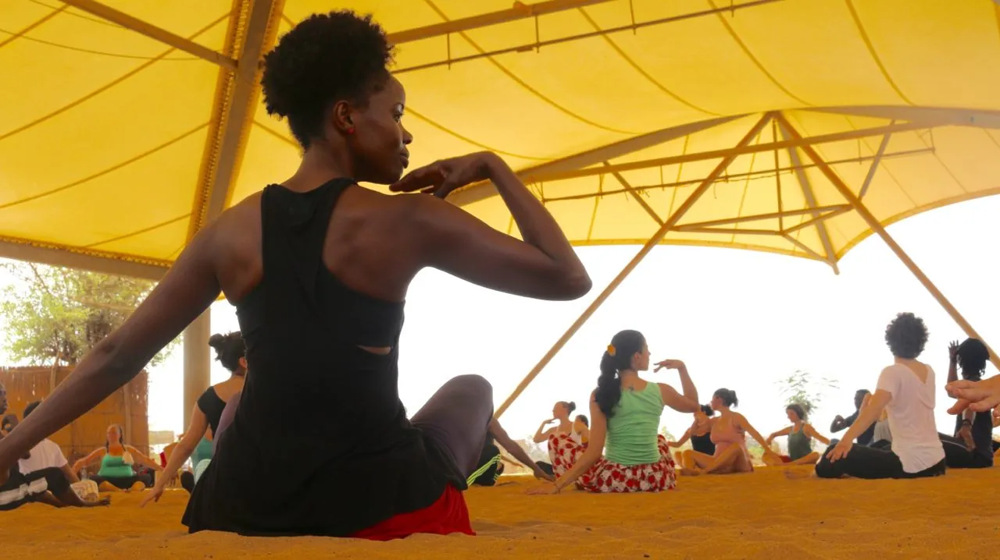
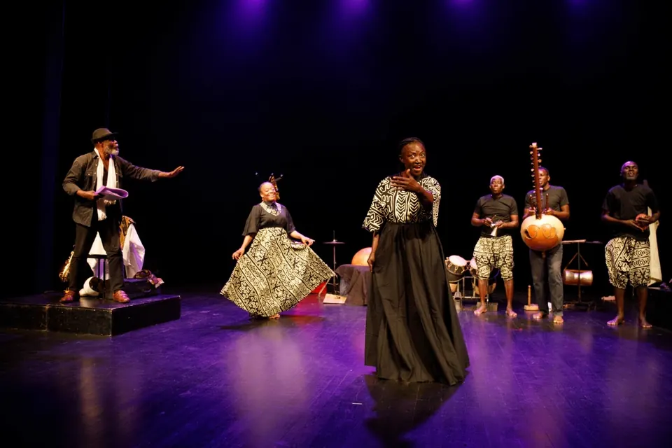
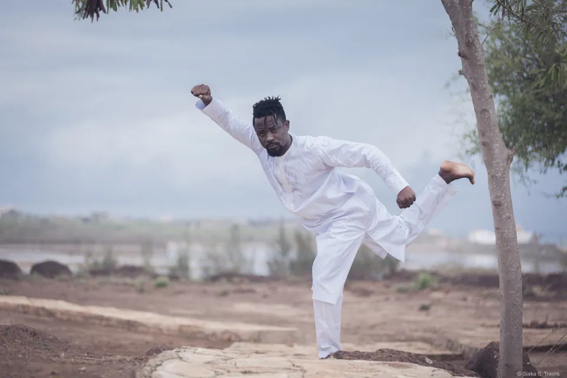
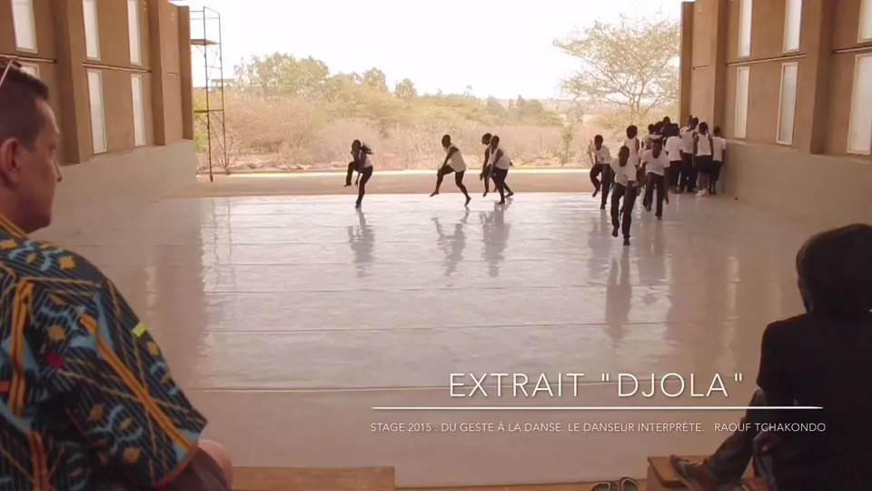

Danseur · Chorégraphe · Professeur · Lomé
Raouf Tchakondo
Le corps comme géométrie.
Les racines comme langage.
Repères
- 2011Enseigne à l’École des Sables, aux côtés de Germaine Acogny
- 2005Fonde Aské Danse à Lomé. « Aské » : la lumière, en kotokoli
- 18danseurs, valides et à mobilité réduite, dans Dansons tous ! (2010)
- 200participants pour le spectacle du Cinquantenaire de l’Indépendance du Togo
« L’élément de base, c’est l’orientation que tu donnes au corps dans l’espace en se calquant sur les figures géométriques : cercles, triangles, losanges, carrés. »
En mouvement
À l’École des Sables, sur la plage de Lomé, en studio, sur scène. Là où il danse, il transmet la joie de danser.








Créations
Voir toutes les créationsLe voir transmettre
Stage « Du geste à la danse. Le danseur interprète », 2015. Extrait « Djola ».
Transmission
Aské Danse
Aské, en kotokoli, c’est la lumière.
Depuis 2005, la compagnie crée, tourne et forme à Lomé une nouvelle génération de danseurs.
Découvrir la compagnieFormations et tournées
De Lomé à Bruxelles, de Pantin à Toubab Dialaw. Les villes s’allument année après année.
Voir le parcours completVous êtes
Prochaines dates
Tout l’agenda-
Dansons tous ! — représentation Exemple
Lieux de formation
- École des Sables
- Centre national de la danse
- Nyanga Zam
- Aské Danse
Logos partenaires : autorisations en cours.